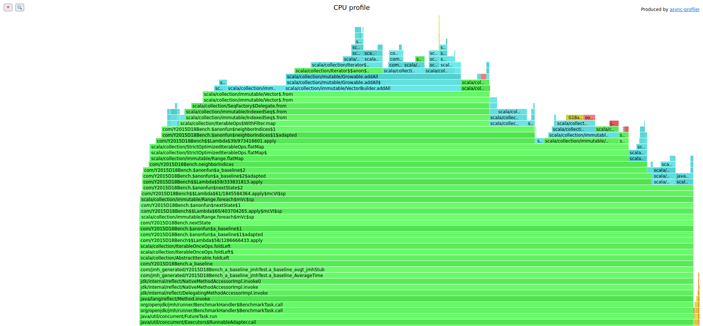
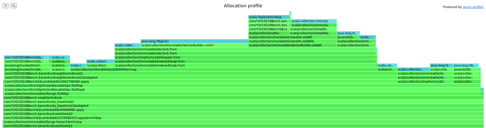
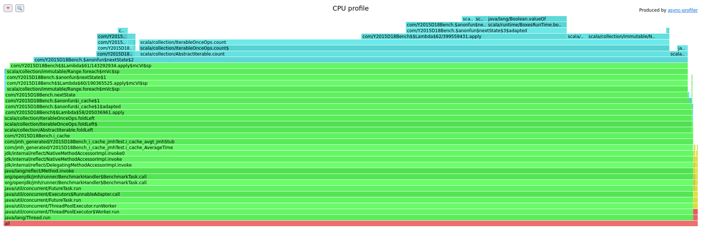

class: center, middle # How to make your Scala code 70x faster --- # Conway's Game of Life  --- # Conway's Game of Life - Any live cell with fewer than two live neighbours dies, as if by underpopulation. - Any live cell with two or three live neighbours lives on to the next generation. - Any live cell with more than three live neighbours dies, as if by overpopulation. - Any dead cell with exactly three live neighbours becomes a live cell, as if by reproduction. --- ```scala def neighborIndices(row: Int, col: Int): Seq[(Int, Int)] = for { nrow <- row - 1 to row + 1 ncol <- col - 1 to col + 1 if nrow >= 0 && nrow < 100 && ncol >= 0 && ncol < 100 if nrow != row || ncol != col } yield (nrow, ncol) ``` --- ```scala def nextState(grid: Array[Array[Char]], neighborIndices: (Int, Int) => Seq[(Int, Int)]): Array[Array[Char]] = { val newState = Array.ofDim[Char](grid.size, grid.head.size) for { row <- grid.indices col <- grid.head.indices } { val neighborIndices_ = neighborIndices(row, col) val neighborsOn = neighborIndices_.count { case (neighborRow, neighborCol) => grid(neighborRow)(neighborCol) == '#' } newState(row)(col) = (grid(row)(col), neighborsOn) match { case ('#', 2) | ('#', 3) => '#' case ('#', _) => '.' case ('.', 3) => '#' case ('.', _) => '.' } } newState } ``` We now have a baseline. --- ## Microbenchark Traps : - warm-up - dead code elimination - Garbage Collector => Use JMH : [sbt-jmh](https://github.com/sbt/sbt-jmh) --- ## Profilers - instrumenting profilers : modify the bytecode with a java agent. slow, break JIT optimization // safepoint bias, … - sampling profiler AsyncGetCallTrace => use async-profiler (native stack) --- # cpu profiler ```scala jmh:run .*Y2015D18Bench.* -prof async:output=flamegraph ```  67% of the time is spent into `neighborIndices` --- # GC profiler ```scala jmh:run .*Y2015D18Bench.* -prof gc ``` allocation rate = 2592 MB/sec --- # allocation profiler ```scala jmh:run .*Y2015D18Bench.* -prof async:event=alloc ``` ```scala bytes percent samples top ---------- ------- ------- --- 10616128696 38.38% 33668 java.lang.Object[] 3259015168 11.78% 8126 scala.collection.immutable.RangeIterator 2581229568 9.33% 8015 scala.Tuple2$mcII$sp ``` A lot of allocation happens Where does `java.lang.Object[]` come from ? --- # allocation profiler ```scala jmh:run .*Y2015D18Bench.* -prof "async:event=alloc;output=flamegraph" ```  --- # Memory allocation > Experience shows that sustained allocation rates of greater than 1 GB/s are almost always indicative of performance problems that cannot be corrected by tuning the garbage collector. The only way to improve performance in these cases is to improve the memory efficiency of the application by refactoring to eliminate allocation in critical parts of the application. From [Optimizing Java](https://www.oreilly.com/library/view/optimizing-java), by Benjamin J. Evans, James Gough & Chris Newland --- ## flatten ```scala def neighborIndices_flatten(row: Int, col: Int): Seq[(Int, Int)] = for { indices <- Seq( (row-1, col-1),(row-1, col),(row-1, col+1), (row-0, col-1),(row-0, col),(row-0, col+1), (row+1, col-1),(row+1, col),(row+1, col+1) ) if indices._1 >= 0 && indices._1 < 100 && indices._2 >= 0 && indices._2 < 100 if indices._1 != row || indices._2 != col } yield indices ``` for comp = flatMap -> flatMap -> … -> map lot of temporary singleton list. tip: avoid temporary objects --- ## flatten ### average time `450 ms/op` ### top allocations ```scala bytes percent samples top ---------- ------- ------- --- 8672943464 40.92% 24484 scala.collection.immutable.$colon$colon 6090893952 28.73% 17606 scala.Tuple2$mcII$sp ``` --- ## flatten2 ```scala def neighborIndices_flatten(row: Int, col: Int): Seq[(Int, Int)] = for { indices <- Seq( (row-1, col-1),(row-1, col),(row-1, col+1), (row-0, col-1), (row-0, col+1), (row+1, col-1),(row+1, col),(row+1, col+1) ) if indices._1 >= 0 && indices._1 < 100 && indices._2 >= 0 && indices._2 < 100 } yield indices ``` --- ## flatten2 ### average time `266 ms/op` ### top allocations ```scala bytes percent samples top ---------- ------- ------- --- 5379481600 25.67% 14862 scala.collection.immutable.$colon$colon 5356625920 25.56% 16078 scala.Tuple2$mcII$sp 3937421312 18.79% 13633 scala.Tuple2[] ``` --- ## offsets ```scala def neighborIndices_offset(row: Int, col: Int): Seq[(Int, Int)] = for { offset <- Seq( ( -1, -1), (-1, 0), (-1, +1), ( -0, -1), (-0, +1), ( +1, -1), (+1, 0), (+1, +1) ) index = (row + offset._1, col + offset._2) if index._1 >= 0 && index._1 < 100 && index._2 >= 0 && index._2 < 100 } yield index ``` --- ## offsets ### average time `406 ms/op` ### top allocations ```scala bytes percent samples top ---------- ------- ------- --- 10395598296 37.54% 30846 scala.collection.immutable.$colon$colon 8152362216 29.44% 22993 scala.Tuple2$mcII$sp 3816204832 13.78% 10861 scala.Tuple2 ``` --- ## offsets_constants ```scala def neighborIndices_offset_constants(row: Int, col: Int): Seq[(Int, Int)] = { for { offset <- offsets index = (row + offset._1, col + offset._2) if index._1 >= 0 && index._1 < 100 && index._2 >= 0 && index._2 < 100 } yield index } ``` It is a constant variable tip: extract constants LEARNING : The JIT doesn't factorize all constants --- ## offsets_constants ### average time `387 ms/op` ### top allocations ```scala bytes percent samples top ---------- ------- ------- --- 7509120528 32.02% 22583 scala.collection.immutable.$colon$colon 7108047248 30.31% 19352 scala.Tuple2$mcII$sp 5741385728 24.49% 14740 scala.Tuple2 ``` What is `scala.Tuple2$mcII$sp` ? Why `scala.Tuple2` ? --- ## offsets better for desugar scala code ```scala offsets .map { offset => val index = (row + offset._1, col + offset._2); (offset, index) } .withFilter { case (offset, index) => index._1 >= 0 && index._1 < 100 && index._2 >= 0 && index._2 < 100 } .map { case (offset, index) => index } ``` --- ## offsets better for ```scala offsets .map { offset => (row + offset._1, col + offset._2) } .filter { index => index._1 >= 0 && index._1 < 100 && index._2 >= 0 && index._2 < 100 } ``` tip : better monadic for --- ## offsets better for ### average time `116 ms/op` ### top allocations ```scala bytes percent samples top ---------- ------- ------- --- 29388489896 89.82% 85462 scala.Tuple2$mcII$sp 2531574160 7.74% 6619 scala.collection.immutable.$colon$colon ``` --- ## offset collect map + filter => collect ```scala def neighborIndices_offset_constants_better2(row: Int, col: Int): Seq[(Int, Int)] = { offsets .collect { case (or, oc) if (row + or >= 0 && row + or < 100 && col + oc >= 0 && col + oc < 100) => (row + or,col + oc) } } ``` --- ## offset collect ### average time `105 ms/op` ### top allocations ```scala bytes percent samples top ---------- ------- ------- --- 17687028536 51.00% 50223 scala.Tuple2$mcII$sp 16786830960 48.41% 48421 scala.collection.immutable.$colon$colon ``` --- ## pooling ```scala def neighborIndices_offset_constants_better2_pool(row: Int, col: Int): Seq[(Int, Int)] = { offsets .collect { case (or, oc) if (row + or >= 0 && row + or < 100 && col + oc >= 0 && col + oc < 100) => indicesPool(row + or)(col + oc) } } ``` => tip : object pooling --- ## pooling ### average time `97 ms/op` ### top allocations ```scala bytes percent samples top ---------- ------- ------- --- 16476678360 98.65% 47108 scala.collection.immutable.$colon$colon ``` no more instances of tuples But still a lot of `List` --- ## cache ```scala def neighborIndices_cache(row: Int, col: Int): Seq[(Int, Int)] = { neighborIndicesCache(row)(col) } ``` tip: precompute all the things ! --- ## cache ### average time `46 ms/op` ### top allocations ```scala bytes percent samples top ---------- ------- ------- --- 432207560 87.79% 1238 char[] 48240680 9.80% 138 com.Y2015D18Bench$$Lambda$62 ``` allocation rate = 43 MB/sec --- ## cache Questions : - how to share the cache between instances ? - how to manage different grid size ? - how to clean the cache (memory leak) ? --- ## new cpu profiling  Lot of time in count (71,8%) TODO what is $adapted --- ``` scala> val indices : Seq[(Int, Int)] = null val indices: Seq[(Int, Int)] = null scala> val grid : Array[Array[Char]] = null val grid: Array[Array[Char]] = null scala> def f = indices.count { case (neighborRow, neighborCol) => grid(neighborRow)(neighborCol) == '#' } def f: Int scala> :javap f ``` --- Function1 is not specialized for `(Int, Int) => Boolean` https://blogs.oracle.com/javamagazine/post/behind-the-scenes-how-do-lambda-expressions-really-work-in-java --- ## foreach ```scala var neighborsOn = 0 neighborIndices_.foreach { case (neighborRow, neighborCol) => if (grid(neighborRow)(neighborCol) == '#') neighborsOn += 1 } ``` --- ## foreach ### average time `42 ms/op` ### top allocations ```scala bytes percent samples top ---------- ------- ------- --- 3411838368 86.29% 9763 scala.runtime.IntRef 465061888 11.76% 1336 char[] 68184064 1.72% 197 com.Y2015D18Bench$$Lambda$62 ``` --- ## while ```scala var neighborsOn = 0 var i = 0 while (i < neighborIndices_.length) { val index = neighborIndices_(i) if (grid(index._1)(index._2) == '#') neighborsOn += 1 i +=1 } ``` --- ## while ### average time `32 ms/op` ### top allocations ```scala bytes percent samples top ---------- ------- ------- --- 590582280 95.95% 1712 char[] 23037168 3.74% 45 char[][] ``` --- ## no lambda call ```scala def nextState_while( grid: Array[Array[Char]], neighborIndices: (Int, Int) => Seq[(Int, Int)] ): Array[Array[Char]] = { ... val neighborIndices_ = neighborIndices(row, col) ... } ``` --- ## no lambda call ```scala def nextState_while( grid: Array[Array[Char]], neighborIndices: (Int, Int) => Seq[(Int, Int)] ): Array[Array[Char]] = { ... val neighborIndices_ = neighborIndices_cache(row, col) ... } ``` No specialized version of `(Int, Int) => Seq[(Int, Int)]` => Boxing of Int --- ## no lambda call ### average time `27 ms/op` --- ## inline4 : vector vs array ### average time `25 ms/op` --- ## col first ```scala for { row <- grid.indices col <- grid.head.indices } { ``` --- ## col first ```scala for { col <- grid.head.indices row <- grid.indices } { ``` --- ## col first ### average time `50 ms/op` --- ## col first Big O notation is broken ! ```scala jmh:run .*Y2015D18Bench.* -prof perfnorm ``` ```scala IPC | 2,785 | 1,579 | L1-dcache-load-misses | 4756014,562 #/op | 12430343,601 #/op | ``` --- ## 1D-array row-major : `index = row * 100 + col` [memory-layout-of-multi-dimensional-arrays](https://eli.thegreenplace.net/2015/memory-layout-of-multi-dimensional-arrays) size in bytes - `Array.ofDim[Char](100,100)` = 22016 (16 + 100 * (216 + 4)) - `Array.ofDim[Char](10000)` = 20016 --- ## 1D-array ### average time `12 ms/op` ```scala bytes percent samples top ---------- ------- ------- --- 1349410648 99.22% 3872 char[] ``` --- ## 1D-array boolean ### average time `11 ms/op` `Array.ofDim[Char](10000)` = 10016 --- # Thanks @nrinaudo for the inspiration [scala-best-practices](https://nrinaudo.github.io/talk-scala-best-practices/)